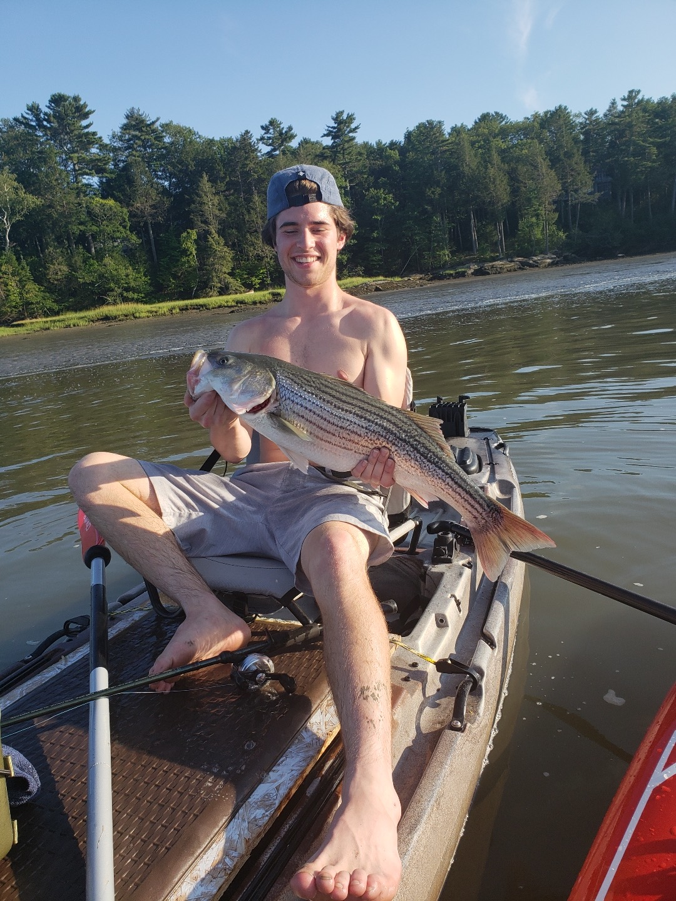

While i lived in Massachusetts I rarely fished on the ocean and would basically spend the majority of my fishing from a kayak on a small pond with a couple friends. When I moved to Maine most of that changed because i was down the road from the ocean. Over the last summer I spent time learning how different fishing in the ocean can be, and how rewarding can also be.
